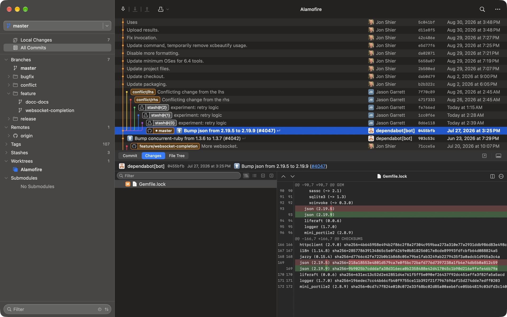

Deku
A Git client that feels like a Mac app.
Download for macOS · v0.2.0Requires macOS 15+ · Apple Silicon · Signed and notarized

Native, top to bottom
Swift 6, SwiftUI and AppKit. System fonts, system controls, system density. No web view anywhere.
A graph that keeps up
Thousands of commits in a virtualized table with stable lane colours, merges, tags and refs inline.
Stage the way you think
Stage files, hunks or single lines. Stashes, conflicts and untracked files live in one Changes view.
Git's own output, verbatim
Pushes, pulls and credential prompts run in a real terminal emulator, so progress and colour look exactly as they do in your shell.
Diffs you can read
Syntax highlighting, expandable context, and side-by-side or unified views modelled on Xcode's comparison editor.
Every repo in one window
Safari-style tabs for your repositories, restored across launches. Drag a branch to merge, rebase or check out.